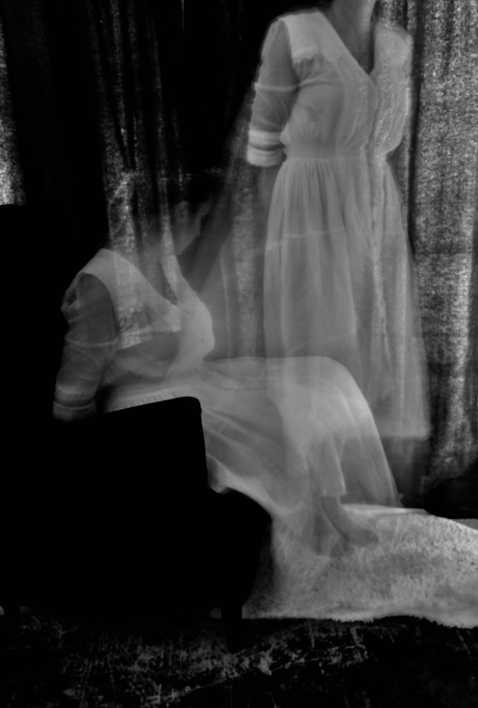
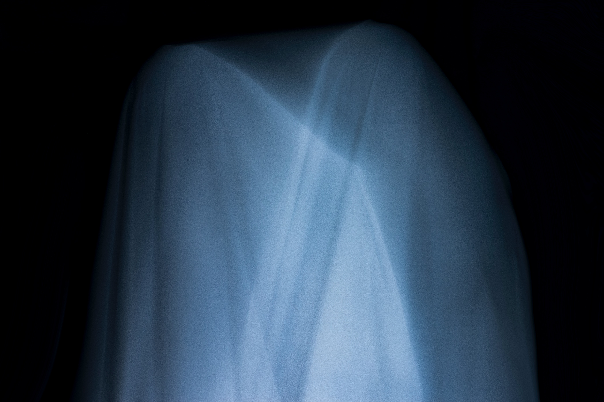

This Issue's Featured Story
Amityville and the Horrors
History and Concept
Late on a November night in 1974, the DeFeo house on 112 Ocean Ave was quiet. Only the sound of a barking dog seems to have been detected. It was later discovered that one member of the family survived the brutal massacre of their family, Ronnie Jr, sometimes call Butch. The small town instantly came to the conclusion that only Ronnie could have committed these murders. Once in police custody, Ronnie ‘Butch’ DeFeo claimed to be approached by a hooded demon bearing a weapon. Upon taking the weapon, he preceded to murder all the members of his family. The police would discover all the bodies lying face down, and according to some first hand accounts the bodies didn’t appear to be moved.
Only about a year later the Lutz family became the new residents of the home, after it was reportedly empty in the thirteen months in between. Receiving a bargain price, they as a family decided to give the house a chance as it could be the start of a new life for them. They began hearing unexplainable noises throughout the house. A local priest came to bless the house but is reported by some accounts to have left immediately. The third floor room was infested with flys, and had never seemed to have improved. George Lutz also claimed to have woken up regularly at 3:15am, roughly about the time the murders were believed to have taken place. A pair of red glowing eyes were also claimed to have peered into the daughters bedroom, spawning the now famous ‘Jodie the Pig’ reference in the film. It is still up for debate as to what happen the last night of the Lutz’s stay in the house on 112 Ocean Ave, and after only twenty-eight days, the Lutz family abandoned the house.
Some More Information
There are conflicting accounts given by DeFeo on the night in question, some researchers have mentioned that the first report taken by police DeFeo states that he was indeed guilty of the murder, not plural. This has given rise to the idea that perhaps the sister Dawn in fact committed the murders of everyone except Ronnie, and he in turn murder her. It is also important to note that Ronnie DeFeo was not only a drunkard but a junkie. Most of his own accounts seem to contradict one another, since his conviction though, DeFeo has maintained his story that a hooded figure handed him the .35 rifle that was used in the murders. Some have also speculated that this was the wish of the grandfather who didn’t want the family’s name dragged through the mud more than it had been.
The family that moved in after the Lutz family lived in the same house for years without any acknowledgement of paranormal activity. In fact, the only thing that seems to have happened after the departure of the Lutz family is that the unique windows have been replaced with windows far less noticeable and less flashy. Also in an investigation by paranormal investigator Peter Jordan, it was found that no evidence supported the claims of Lutzes in regards to broken glass or other damages to the house. Furthermore there seems to have been no pertinent lapse of time between the Lutz family abandoning the house and the new owners buying it from the bank.
In the late 1970’s, both George and Kathleen Lutz were subjected to a polygraph test, while many claimed that this would prove that they were lying or being honest there are a number of problems with this. Polygraph tests are not typically allowed in court as they are sometimes unreliable. Also in his research, Dan Ariely, professor at Duke University, found that it is entirely possible to more or less trick a lie detector test, if the person believes that they are doing something for the sake of goodness. Field Note: Ariely explains this experiment in some depth in Alex Gibney’s film about Elizabeth Holmes and Theranos, The Inventor: Out for Blood in Silicon Valley.
Some Theories
The most obvious explanation seems to be that the Lutz family simply made up the story. While the events in the book by Jay Anson are widely disputed, it is argued by the Lutz family that the events are mostly true. Some critics even suggest that the Lutzes had formulated the plan long before living in the house. Many point to the fact that the family after lived in the same house with no known psychic or paranormal activity. It could even be argued that the only real disturbance has been the aftermath of the popularization of the house, thus leading the remodeling of the house to be less recognizable.
An equally stunning realization is that it may be equally obvious that the events are as the family would put it, mostly true. Well known paranormal investigators Ed and Lorraine Warren inspected the house in a famous on screen look into the house. While some of the people there claim to not have experienced much, the group included reporters and investigators of many kinds. Lorraine Warren once stated that it was ‘one the most haunted places in the world.’ On the same night in question a camera placed on the second floor appears to have captured a photo of a young boy, when no children would have been in the group.
There is also a middle ground in which both groups could have a claim, it is entirely possible for one person to almost fear themselves into belief of this kind. It’s not uncommon for paranormal investigators to point out that sounds from plumbing or odd drafts in a house to be perceived by someone as voices speaking or a series of creaks to sound like footprints. It can’t be forgotten that the mind in incredibly powerful, and quite adept at creating patterns, even there isn’t any to be found. Therefore it is also not out of the realm of possibility that many of these claims were experienced but were misinterpreted as being paranormal activity. Even the DeFeo murders themselves are missing components that could definitively prove what happened one way or another.
Extra Stories
I’ve lived in Arizona all my life. If I’m being honest, as a kid I hated it and it wasn’t really until I read Frank Herbert’s ‘Dune’ that I began to enjoy living in a desert. But the thing about the Grand Canyon State is that we have lots of nature, with lots of variety. Sedona being among these types of variety. Growing up in Phoenix, we always heard strange rumors about Sedona. Perhaps it's a byproduct of being raise in Arizona, but I like to think I have an open mind. At least when it comes things like this anyway. Arizona is home to lots of cultures, thus a lot of points of view. It has been said that the person that masters tories masters life, but what about things that are beyond what we understand in life?
Now I have to be honest that most of these stories ranged from hauntings, to dark gatherings, all the way to alien hypnosis. But what Sedona is mostly known for is the Vortex theory. That is, a group of psionic vortex exist in Sedona, and furthermore are an attraction to extraterrestrials. Anyone who has ever traveled to Sedona can quickly see that it’s mostly a ritzy art town steeped in the wondrous red rocks of Arizona. As someone that has spent his whole life in Arizona and been to Sedona more times than I can count, I have to be honest, I’ve never experienced anything out of the normal.
The only real paranormal events that have seemed to come about in Arizona are the Phoenix Lights in the late 1990’s and again in ’07 and ’08, to which the reports suggest that the flight pattern was over Prescott Valley, a number of miles west of Sedona. Which furthermore begs the question of what’s really up with Sedona? Well as someone that has been all over the town and has a good friend that routinely hikes the areas of Sedona, I highly question the legitimacy of these claims.
 Before continuing, anyone unfamiliar with my background might think I’m just another skeptic here to ruin everyone’s good time. Well being that my name isn’t Karen I’m not about that. Apologies to all the non-Karen, Karens in the world. I am a fan of some skeptics but I’m also a fan of some believers, and more importantly I’m a fan of Emerson, Thoreau, Socrates and Voltaire. Which is really the long way of saying I prefer balancing the two approaches. There are plenty of cases I have researched that I think are bogus, there are some that I think are genuine, and some that I’m utterly confused by. Sedona and the Vortex theory represents the third option.
Before continuing, anyone unfamiliar with my background might think I’m just another skeptic here to ruin everyone’s good time. Well being that my name isn’t Karen I’m not about that. Apologies to all the non-Karen, Karens in the world. I am a fan of some skeptics but I’m also a fan of some believers, and more importantly I’m a fan of Emerson, Thoreau, Socrates and Voltaire. Which is really the long way of saying I prefer balancing the two approaches. There are plenty of cases I have researched that I think are bogus, there are some that I think are genuine, and some that I’m utterly confused by. Sedona and the Vortex theory represents the third option.
Who really knows it could all be real and I’m the guy pulling it down for no good reason. But unfortunately in this line of work, our opinion is also relative to the amount of evidence we find. The problem in a case like this is weeding through all the various anecdotal stories that seem to have widely different elements. When I was a kid the rumor in the neighborhood was that a cult of dark worshipers had inhabited the edges of the town, or perhaps Cottonwood a small town closer to Sedona. This was a prevalent theory for quite some time, as this was before the popularization of the internet- - if you could imagine such a time. It wasn’t until I was a young adult that I first heard of the Vortex Theory. Although it wasn’t the first theory I came across, but it was certainly the loudest. According to the articles I could dig up from the library at the local community college, the theory was first floated in the 1980’s by someone that claimed to have paranormal experiences.
Now don’t get me wrong, if we could have some ‘Close Encounters of the Third Kind’ things going on, I’m all for it. However, according to urban legend, most UFO related activity tends to actually happen in Glendale, a suburb of Phoenix. Anyone familiar with this town or the military might understand why. Luke Air Force Base is arguably one of the coolest bases in the US, but is also definitely one of the most important. In fact we are home to a number of aircraft that are typically only stored in Arizona. Some of this is due to secrecy but also due to our climate, in fact it's one of the Five C’s or basically the five reasons you should come to Arizona.
Lastly, on my most recent trip to Sedona, no one, at anytime sensed anything out of the ordinary. I had even brought the theory up to a number of the people on the trip. I was with a large group of people that all are privy to the ideas I spend my time researching and most of them would describe themselves as believers. Unfortunately, if these claims of paranormal vortices proved to be scientifically untrue, the loudness of the claims may give it a longer shelf life. Similarly to Roswell, there is some merchandising going on around the ideas of the Vortex Theory, but unlike Roswell, the economy of Sedona isn’t dependent on the existence of paranormal activity.
As a fiction writer, I love the Vortex Theory as it is a pretty gnarly concept, but as a researcher/journalist I find it desperately in need of more study. The truth of the matter may be that this theory has prevailed for the basic reason of it being true. However, there seems to be little physical evidence to suggest its existence, scientific or paranormal.
Champ? From the Lake?
Background
Hundreds, even thousands of years in the making, the Great Lakes region has changed over the course of time. According to geologists, the body of water we now refer to as Lake Champlain was at one time more like a sea, and more importantly, a salt water sea. It is thousands of years ago that some believe a plesiosaur like animal lost its way and found itself in the sea in question. Over time the opening that would have allowed such a creature to swim into the sea, was closed, thus confining this animal and its descendants to a life in the Great Lakes. Adaptations would likely have to occur to allow this creature to live in fresh water. In more recent years, eye witness testimony has racked up to such a degree that it has fueled the search for many cryptozoologists. While the creature was reported to be first observed in the 17th century by Samuel de Champlain, the idea has continued on until the present day. Documentation exists for a few of the sightings and well funded expeditions have continued to search the lake. The most widely used piece of information is a photograph taken by a woman while at the lake with her family.
Some More Information
As anyone familiar with the work of Alfred Wegener knows, the earth is constantly changing. While these changes often occur over hundreds of years, there are a number of events that can happen both rapidly and unexpectedly. Volcanos and earthquakes are some examples of this. While the closing off of a sea might take some time, the idea that animal could lose its way under these conditions and thus be cut off isn’t out of the realm of possibility to some researchers. Lake Champlain is a body of water stretching over one hundred, twenty-five square miles. There are also some animals in this ecosystem that have adapted to fresh water from salt.
The description of the animal is similar to that of a plesiosaur which is believed to have gone extinct along with the rest of the dinosaurs at the end of the Cretaceous period. While the creature, like whales and dolphins, had lungs, this particular type of creature was so large that it would easily be seen rising to the top to take a breath. This has fueled both sides of the debate vigorously.
Much like other areas with famed paranormal or odd activity, there is a sizable cottage industry that has sprung up around the idea of the American Loch Ness Monster. Also in the New York and Vermont state governments there have been laws passed in recent years to help protect the lake on the off chance something does live in it.
Some Theories
In this case, there really are only two theories that have filtered to the top of the debate. Champ either does, or does not exist. Proponents of the theory of existence argue, much like in the case of Bigfoot, that due to the lake’s size, it is possible for such a large creature to hide from people and remain undetected. Furthermore, some cryptozoologist point to the fact that it isn’t that uncommon for scientist to classify a species to be extinct but then later find evidence of its existence by way of photos or discovery of a corpse. The number of eye witnesses has increased over time as well, suggesting that perhaps not everyone could be wrong. Cryptozoologists also point to various species that have been found, and argue that Champ is just another example of that.
Opponents to the idea argue against much of the physical evidence. It has been reported that the famous picture of Champ can’t be verified as the negatives were never investigated. It is said that the photographer threw out the negatives. Also there is questions due to the fact that the photographer couldn’t remember where the picture was taken at the lake, and also claimed to have watched Champ for roughly five minutes, but only caught one picture. In an episode of ‘Monster Quest’ a group of cryptozoologists claimed to have an audio based recording of an unknown creature creaking, but if listened to closely, it is entirely possible that it was a reel from a fishing rod. A quick look on a search engine will also give way to numerous fishing hotspots. Skeptics also argue that it is common for oddly shaped logs to float to the top of the lake as gases are expelled during decomposition underwater. Another sighting is explained in the same episode, where a woman claims to have seen Champ climb out of the water and walk on dry land to a light post in front of her home. However experts on the plesiosaur argue that because of its fin like limbs, it would be incapable of walking.